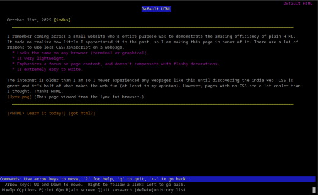

October 30th, 2025 [index]
I remember coming across a small website who's entire purpose was to demonstrate the amazing efficiency of plain HTML. It made me realize how little I appreciated it in the past, so I am making this page in honor of it. There are a lot of reasons to use less CSS/Javascript on a webpage.
The internet is older than I am so I never experienced any webpages like this until discovering the indie web. CSS is great and it's half of what makes the web fun (at least in my opinion). However, pages with no CSS are a lot cooler than I thought. Thanks HTML.
